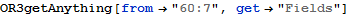

Get “Supplier” Associative Set in value format
Get “Supplier” Associative Set in reference key format
Get “prtID” Attribute
Get Datum where Parts.pid=998
Get OrientDB record of a Datum

Get the value of a Datum
Get the class of a Datum

Get other items that are in the same collection (class) with a Datum
Get other items that are associated with a Datum
Get tuples that this Datum is part of